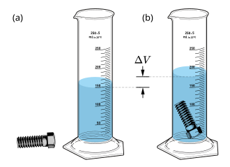
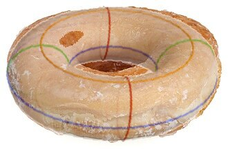
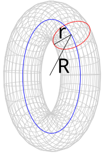
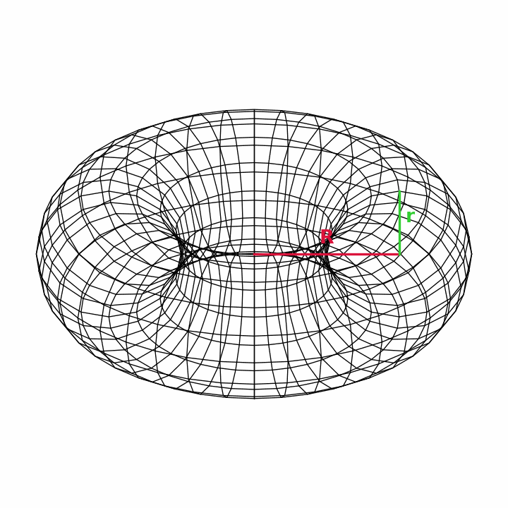

What's the surface area of a sphere? To be specific, say it has radius r.
You might have memorised that the area is 2 τ r2. If you haven't, but you know calculus, you could set up an integral to calculate the area. Is there another way?
The volume of a sphere is also well known, as (2/3) τ r3, or by another messy integral. But if you, unlike entrenched mathematicians, have any respect for physical reality, you have another way to find the volume of a sphere, or any other shape. Build the shape from dense material, submerge it in water, measure how high the water rose, and calculate the displaced volume. For a more general formula, build and submerge the shape at several sizes, then do the requisite statistics.

Wikimedia Commons User:MikeRun, 2022, CC BY-SA 4.0
There is no good general method like that to measure areas. The closest equivalent would be to paint the entire surface, and measure how much paint you used, being impractically careful to use a constant thickness of paint. So it would be convenient to find surface area using volume.
Let's cut off a shell from around the sphere. Say the shell is a units thick.
Since the shell is at the surface, it should relate to area, and since the shell has some thickness, it should relate to volume.
The shell is almost a sheet, so its volume is (almost) its area times its thickness, A a. Since the inner sphere plus the shell make the original sphere, we have V0 + A a = V. That is, we can treat the shell's volume as an increment upon the inner sphere's volume.
The inner sphere is scaled equally in every dimension from the original sphere. So the inner sphere's volume is scaled cubically from the full sphere's volume, by V0 = V ((r - a) / r)3 = V (1 - a / r)3. That equation uses a ratio.
Combining the increment and the ratio, we have two equations for two unknowns, V and V0, so we can solve for both: V - A a = V (1 - a / r)3. Expanding on the right, we have V - A a = V (1 - (3 a) / r + (3 a^2) / r^2 - a^3 / r^3). But the increment equation gets more correct as the shell gets thinner as a approaches 0 as powers of a above linear become negligible, so we drop those terms: V - A a = V (1 - (3 a) / r).
The rest is ordinary algebra. Subtract V from both sides: -A a = -(3 a V) / r. Multiply by -1 / a on both sides: A = (3 V) / r. Plug in the known V: A = (3 / r) (2/3) τ r3 = 2 τ r2. And lo, we have an area formula!
This increment-ratio method also works to find volume given area. Let's find the volume of a cone. To be specific, say it's a right circular cone (the usual kind) with radius r and height h.
Let's cut off a slice from the bottom of the cone. Say the slice is a units thick.
The unsliced remainder of the cone then has height h - a. Its radius is less trivial. As a scaled-down version of the original cone, this lesser cone's radius would be a scale factor times the original radius. The scale factor is (h - a) / h = 1 - a / h, so the scaled radius is (1 - a / h) r.
A slice off the bottom is quite nearly a cylinder, with one end slightly wider than the other. Here, the narrow end has the scaled radius (1 - a / h) r, and the wider end has the original radius r. Roughly, its volume is that of a cylinder with a radius halfway between those: (1/2) τ ((1 - a / (2 h)) r)2 a.
We can treat this cylinder-volume as an increment upon the unknown unsliced-cone-volume.
Since the lesser cone is scaled equally in every dimension from the original, its volume is also scaled cubically. So we have a ratio (1 - a / h)3 between their volumes.
With two unknowns (the unsliced cone's volume and the full cone's volume) and two equations (the increment relation and the ratio relation), we can solve for both. The unsliced cone's volume is both V - (1/2) τ ((1 - a / (2 h)) r)2 a, by the increment, and V (1 - a / h)3, by the ratio. So V - (1/2) τ ((1 - a / (2 h)) r)2 a = V (1 - a / h)3.
Expand both sides to find V - (1/2) τ (1 - a / h + a2 / (4 h2)) r2 a = V (1 - (3 a) / h + (3 a2) / h2 - a3 / h3). The equation gets more accurate as the cylinder better approximates the slice as the slice gets thinner as a approaches 0, so we can neglect powers above the linear of a. All the terms with a in the left side's parens multiply with the a at the end to make terms quadratic or cubic on a. Likewise, the last two terms in the right side's parens are powers of a. So, with negligibly-small a, V - (1/2) τ r2 a = V (1 - (3 a) / h).
The rest is ordinary algebra. Subtract V from both sides: -(1/2) τ r2 a = -(3 a V) / h. Multiply both sides by -h / a: (1/2) τ r2 h = 3 V. Divide both sides by 3: V = (1/6) τ r2 h. And lo, we have a volume formula!
How much material does it take to glaze a donut?
An idealised donut is a geometric torus.

Evan Amos, 2010, public domain and Tilman Piesk, 2021, CC BY 4.0
A torus has a major radius, call it R, and a minor radius or -half-thickness, call it r.

You can find the volume of a torus physically, as above. A relatively simple triple integral would also do it, inasmuch as such a thing can exist. The donut's glaze follows its area, which we can calculate from volume with our new trick.
For the sphere and the cone, we scaled a modified shape along every dimension. However, the torus shrinks back from its surface by scaling along its minor radius.

Locally, a torus thus shrunk is scaled from the original along two dimensions. In cross-section, it goes from two circles each of radius r to two circles each of radius r - a. Thus the volume scales by the ratio V0 = V ((r - a)2 / r2).
The increment here is just the surface scaled by the thickness removed: V = V0 + A a.
Solving, we find V - A a = V ((r - a)2 / r2), and then A = (V / a) (1 - (r - a)2 / r2). Since powers of a become negligible, as before, the formula for A reduces to (V / a) ((2 a) / r) and then (2 V) / r.
If you measured the volume of a torus to be (1/2) τ2 R r2, you would conclude that its area is τ2 R r, which is correct.
{kind=link}
{kind=link}
{kind=link}